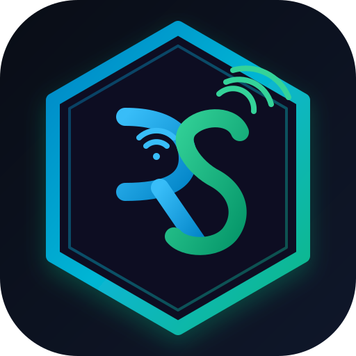

This application is pre-compiled and configured to run completely offline without an internet connection.
Everything is already built inside the dist folder. You do not need to install Node.js, Python, or connect to the internet:
If you have internet access on this device and prefer to install straight from the cloud:
🚀 Open Live App & Install to Desktop